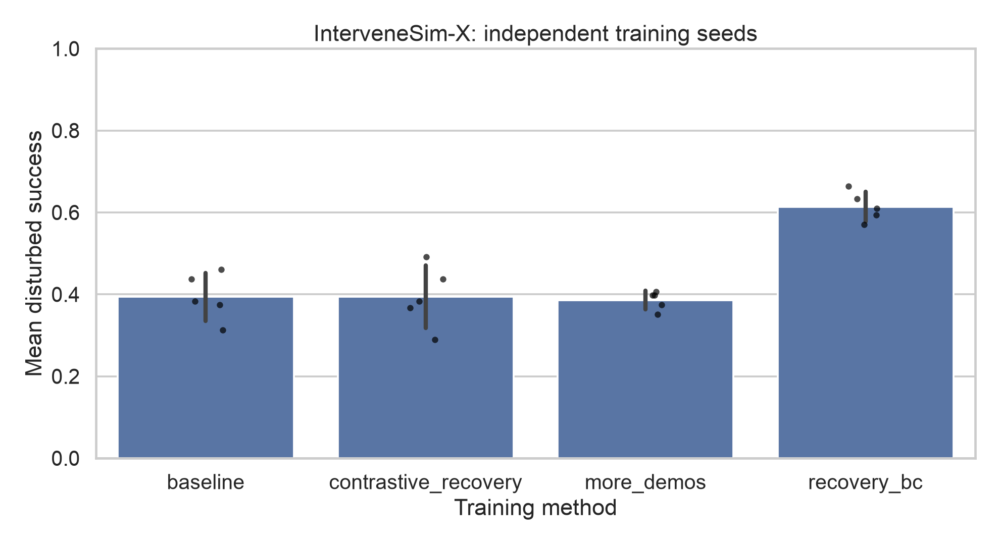
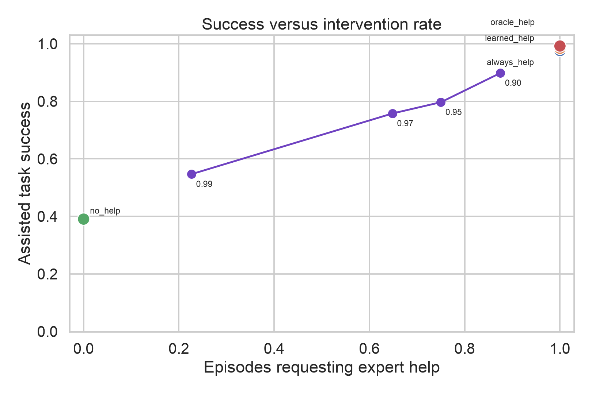

Rejected-action contrast hurts.
Pushing predictions away from the action rejected at intervention sounds principled. It falls 22.0 points below ordinary recovery cloning and loses on all five seeds.
A controlled simulation study asks whether corrective actions teach more than the same number of clean labels—and reports the failed ideas, too.
The baseline and recovery-trained policies face the identical cereal gripper-slip episode. The baseline times out; the correction-trained policy reacquires and places the object.
At an equal budget of 4,800 added action labels, ordinary behavior cloning on recovery corrections reaches 61.4% disturbed success. Additional clean labels reach 38.6%. The gain is positive for every independently trained policy.

Train a multi-domain behavior-cloned policy on clean expert demonstrations.
Roll it out under four controlled failure families on its own state distribution.
Record expert recovery actions and the robot actions rejected at takeover.
Retrain with identical added-label budgets and matched deployment episodes.
Pushing predictions away from the action rejected at intervention sounds principled. It falls 22.0 points below ordinary recovery cloning and loses on all five seeds.
The temporal risk model reaches 0.919 held-out AUROC, yet its high-recall operating point asks for help almost everywhere. The deployed frontier is the metric that matters.

At threshold 0.97, the detector requests expert control on 64.8% of disturbed episodes and 3.1% of nominal ones. This sweep followed the calibration audit, so it is explicitly labeled exploratory.
Simulator, data collection, paired rejected actions, models, checkpoint resumption, statistical analysis, raw episode records, tests, figures, and video are in one repository.
git clone https://github.com/ethanvillalovoz/intervenesim.git
cd intervenesim
uv sync --locked --extra dev
uv run intervenesim smoke
uv run intervenesim research --config configs/research.yamlThis is a state-based, scripted-supervision simulation study. It does not establish visual robustness, human correction quality, robot safety, or sim-to-real transfer. Those limits are part of the artifact, not footnotes to hide.